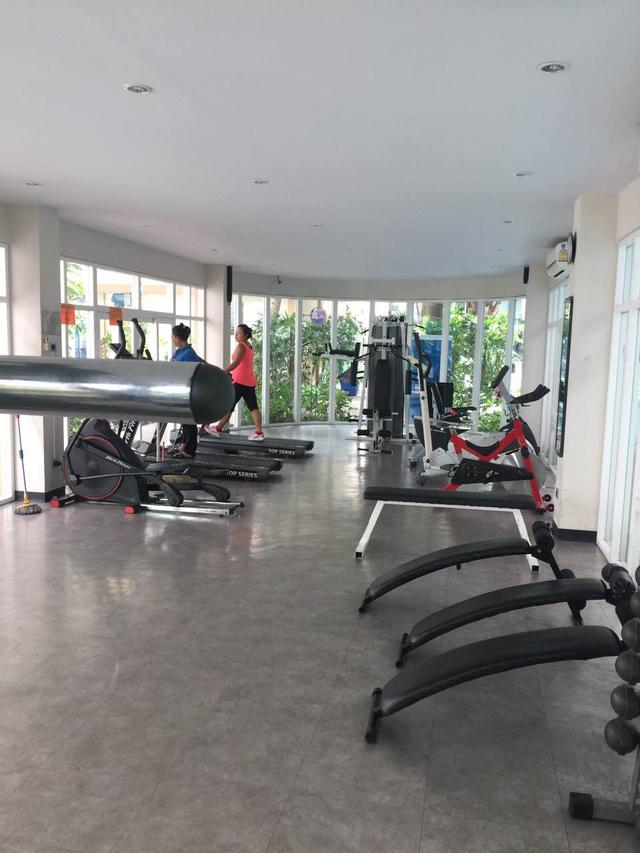
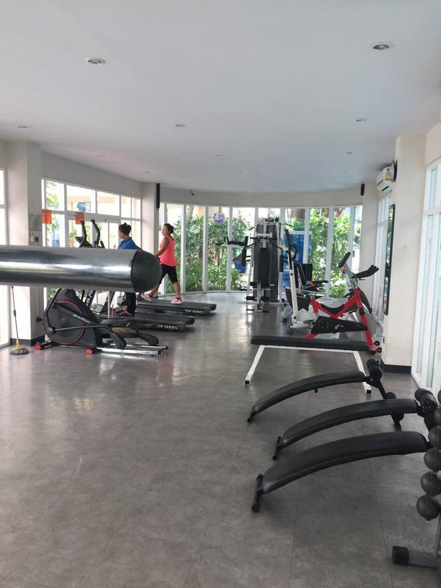

如何在泰国买房？
近两年，泰国房产市场升温高潮，尤其是曼谷和芭提雅，房价一路飙涨。很多国内投资者在泰国置业的时候都有同一个疑问，中国人在泰国如何买房、需要注意什么？今天跟大家普及一下泰国置业的常见问题。
中国人可以在泰国买房吗？
对于公寓这种不包含地，只包含产权的建筑物，开发商被允许以产权形式向外籍人士出售建筑物的全部可销售建筑面积的49％，其余51％必须售予泰国公民或者泰国公司。房屋都是永久性产权，没有房产税和遗产税，这些也是吸引大多数人选择在泰国投资买房的原因。
在泰国买房投资划算吗？
单纯从投资的角度来说，芭提雅的公寓的投资回报率还是挺不错的，租金收益在5%左右，而且大多数项目都是提供包租服务，签完合同就委托给租赁公司，不用担心房屋闲置问题。选择项目的时候尽量选择有稳定客流的城市，比如曼谷、芭提雅等。
从增值的角度来看，泰国的房子确实增值速度很快，最近3年时间，大概增幅在30%左右，每年增幅在10%左右，特别是好地段的房子。
泰国房产会不会有泡沫？
泰国的房地产市场跟国内截然不同，土地都是私有，年轻人对房产的需求绝对不是非常旺盛，基本上没有炒房的现象，大部分年轻人买公寓都是为了改善居住环境而已。而且泰国对于本国人的房产贷款简直是中国人无法想象的，很多房子都可以零首付。更关键的是，正规途径下，外国人只能购买没有土地的公寓，虽然多少影响了泰国的房地产价格，但也不至于太夸张。
泰国房地产（公寓）物业设施有哪些？
出海置业
一般泰国公寓物业设施有：停车位、健身房、游泳池、图书馆、桑拿室等，这些都是免费使用的。
 

泰国房产有无公摊面积？
出海置业
泰国房屋无公摊面积，都是按实际使用面积计算。
泰国消费水平怎么样？
出海置业
泰国的通货膨胀比较低，消费物价比起国内很多一二线城市相对较为便宜。
泰国医疗、教育水平如何？
泰国医疗水平可以达到全球顶尖的技术水平试，试管婴儿、整容、心脏科最为突出，服务非常好，配置多国家语言翻译服务； 良好的国际学校教育，实行开放式的观念教育，中英泰语言，比较注重孩子的教育成长。
如何把钱汇到泰国？
外国人在泰国购买房产，需要把购房款从泰国以外通过银行汇到购房人在泰国本地银 行开的账户；购房款到了泰国以后，由银行出具国外汇款证明即可以凭此证明到土地厅过户，每人每年外汇限额5万人民币，或者给中国公司支付等额汇率的人民币。
泰国养老政策怎么样？
年满 50 岁的外国人可以在泰国申请养老居留。(在当地银行拥有 80 万泰铢存款，约合 16 万人民币)
以上就是泰国置业的常见问题，如果有其他疑问可以留言交流，或私信给我。也祝愿大家早日买到合适的房子！